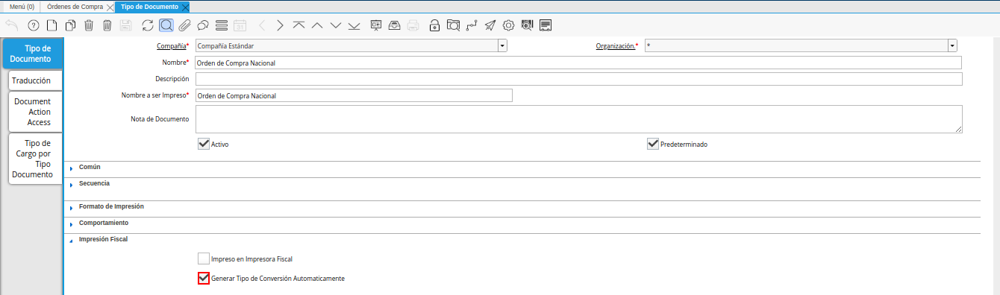
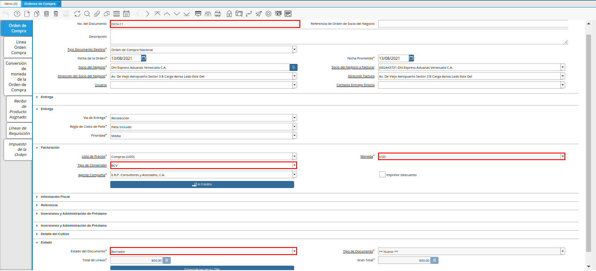
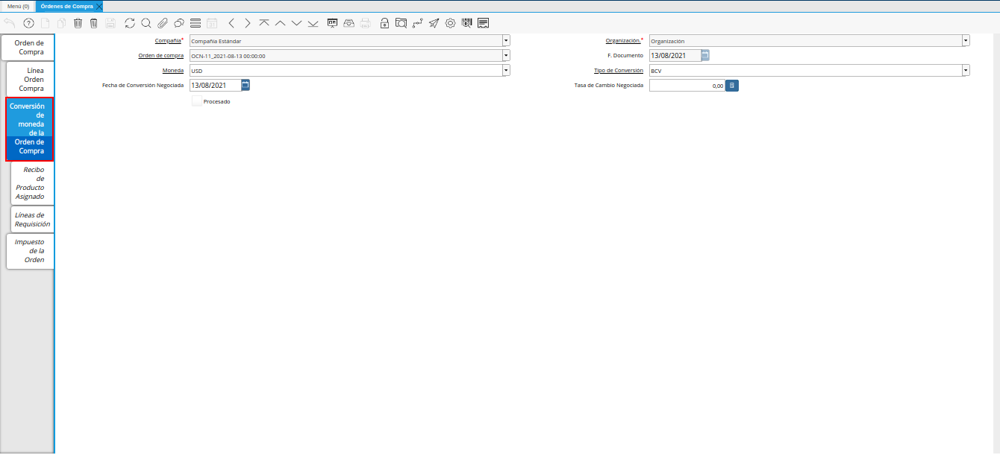
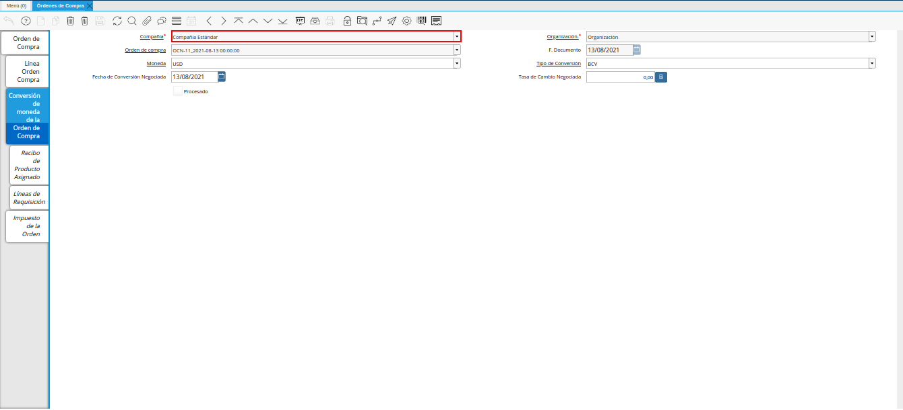
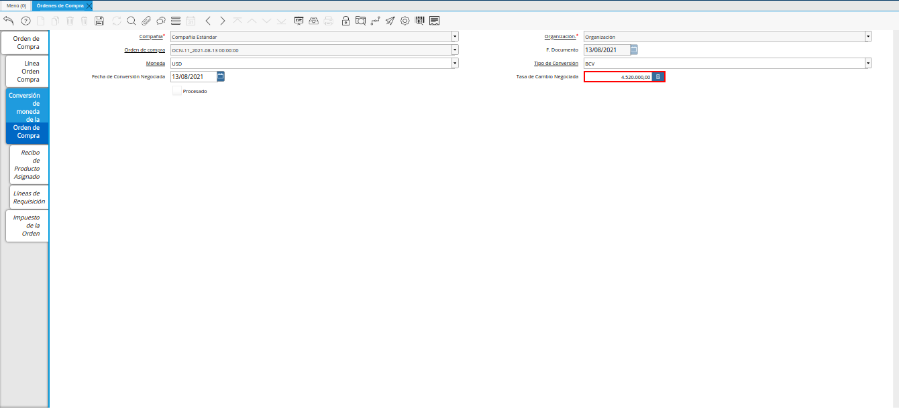
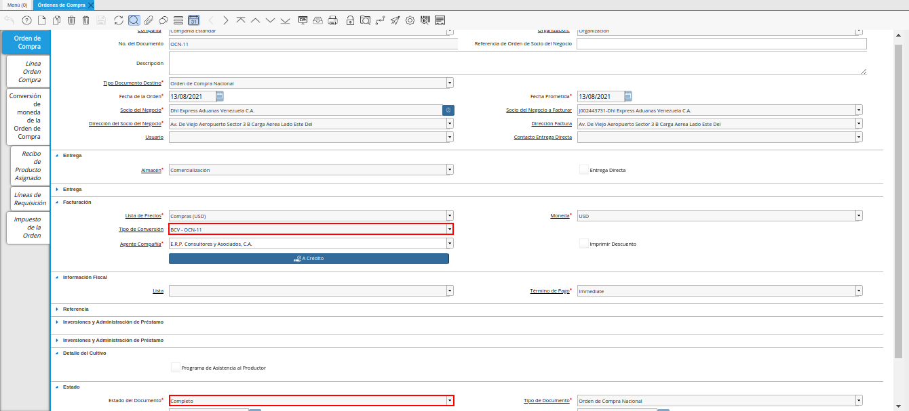
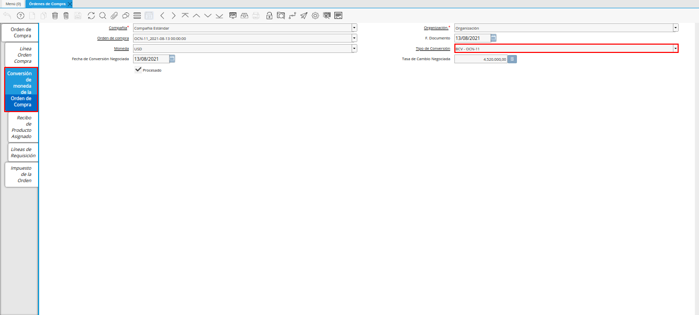

Tasa de Conversión Negociada
El procedimiento “Tasa de Conversión Negociada”, consiste en mantener una tasa de cambio para una compra determinada cuando la orden es realizada con moneda diferente a la moneda base de la compañía.
La configuración del proceso consiste en activar el check “Generar Tipo de Conversión Automaticamente” en el tipo de documento “Orden de Compra”.

Imagen 1. Check en el Tipo de Documento Orden de Compra
Al establecer la tasa negociada en la orden de compra y completar la misma, ADempiere crea un tipo de conversión con su respectiva tasa de cambio, donde el valor de la tasa es igual al valor ingresado en la orden. Adicionalmente, se reemplaza el valor del campo “Tipo de Conversión” de la pestaña “Orden de Compra”, asignando el tipo de conversión creado con la tasa negociada.
Para explicar de manera detallada el proceso indicado anteriormente, se procede a realizar el registro del encabezado y las líneas de la orden de compra “OCN-11”, este se realiza en las pestañas “Orden de Compra” y “Línea Orden Compra” de la ventana “Órdenes de Compra”. De no conocer dicho procedimiento, puede consultar el material Registro de Orden de Compra Directa, sin completar el documento. Es decir, que la orden debe estar en estado “Borrador”.

Imagen 1. Orden de Compra en Estado Borrador
Luego de tener el registro de las pestañas “Orden de Compra” y “Línea Orden Compra” de la ventana “Órdenes de Compra”, se procede a seleccionar la pestaña “Conversión de Moneda de la Orden de Compra” y llenar los campos correspondientes.

Imagen 2. Pestaña Conversión de Moneda de la Orden de Compra
En el campo “Compañía”, se puede visualizar el nombre de la compañía para la cual se esta realizando la orden de compra. Esta información viene cargada desde la pestaña “Orden de Compra”.

Imagen 3. Campo Compañía de la Pestaña Conversión de Moneda de la Orden de Compra
En el campo “Organización”, se puede visualizar el nombre de la organización para la cual se esta realizando la orden de compra. Esta información viene cargada desde la pestaña “Orden de Compra”.
Imagen 4. Campo Organización de la Pestaña Conversión de Moneda de la Orden de Compra
De igual manera, podrá visualizar en el campo “Orden de Compra”, el número de orden de compra establecido en la pestaña “Orden de Compra” al guardar el registro.
Imagen 5. Campo Orden de Compra de la Pestaña Conversión de Moneda de la Orden de Compra
La fecha en la que fue realizado el registro de la orden de compra, es visualizado en el campo “F. Documento”.
Imagen 6. Campo F. Documento de la Pestaña Conversión de Moneda de la Orden de Compra
En el campo “Moneda”, se puede visualizar la modena de la negociación de la orden de compra.
Imagen 7. Campo Moneda de la Pestaña Conversión de Moneda de la Orden de Compra
En el campo “Tipo de Conversión”, se debe seleccionar el tipo de conversión con el cual se realizó el encabezado de la orden de compra.
Imagen 8. Campo Tipo de Conversión de la Pestaña Conversión de Moneda de la Orden de Compra
La fecha de la tasa de la negociación, se visualiza en el campo “Fecha de Conversión Negociada”.
Imagen 9. Campo Fecha de Conversión Negociada de la Pestaña Conversión de Moneda de la Orden de Compra
Finalmente, la tasa cambio de la negociación se debe ingresar en el campo “Tasa de Cambio Negociada”.

Imagen 10. Campo Tasa de Cambio Negociada de la Pestaña Conversión de Moneda de la Orden de Compra
Note
Recuerde que debe guardar el registro de los campos, antes de posicionarse en cualquier otra pestaña de la ventana “Órdenes de Compra”.
Seleccione la pestaña principal “Orden de Compra” y proceda a completar el registro de la orden de manera regular como se indica en el material Registro de Orden de Compra Directa.
Una vez la orden se encuentre en estado “Completo”, se crea de manera automática el tipo de conversión con el número de la orden “BCV - OCN-11” y la tasa de cambio negociada previamente establecida en la pestaña “Conversión de Moneda de la Orden de Compra” y a su vez, se reemplaza el tipo de conversión de la orden de compra en el encabezado, por el nuevo tipo de conversión creado.

Imagen 11. Orden de Compra en Estado Completo con Tipo de Conversión de la Negociación
Adicionalmente, se reemplaza el tipo de conversión de la pestaña “Conversión de Moneda de la Orden de Compra” por el tipo de conversión de la negociación asignado de manera automática en el encabezado de la orden. Para el presente ejemplo, dicho tipo de conversión es “BCV - OCN-11”.

Imagen 12. Tipo de Conversión de la Negociación en Pestaña Conversión de Moneda de la Orden de Compra
Note
Al momento de realizar el documento por pagar correspondiente a la orden de compra previamente creada, ADempiere respeta el tipo de conversión y la tasa de cambio negociada que contiene dicha orden, generando el documento con los mismos valores en cuanto al tipo de conversión y la tasa de cambio.